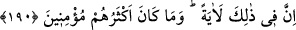
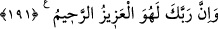

açıktır. Ya da gölgeyi kasdetmişlerdir. Çünkü azab, bu gölge tarafından inmiştir.
“
” gölgeleyen buluttur. Kâşifî der ki: “
” lügatte gölgelik demektir. O siyah
bulut, onların başı üzerinde gölgelik gibi idi.”
Azâbın gölgeye değil de güne izâfe edimesi, onların bugünden başka bir günlerinin de
olacağına bildirmek içindir. Allah’ın yedi gün ve yedi gece süren şiddetli harâreti
onlara musallat ettiği günler gibi. İşte bu onların ateş cinsinden bir şeyle yakalanıp
cezalandırıldıklarını gösteren bir alâmet idi.
“Gerçekten o,” yâni gölge gününün azâbı “muazzam bir günün azâbı idi!” Günün
büyüklüğü, o günde meydana gelen azâbın büyüklüğünden dolayıdır.
Rivâyete göre Şuayb (a.s.) iki ümmete; Medyenliler’e, sonra da Eykeliler’e
peygamber gönderildi. Medyen halkı şiddetli gürültü ve yer sarsıntısı ile, Eyke ashabı
da gölge gününün azâbı ile helâk edildi.
İbn Abbas (r.anhümâ)’nın: “Kim sana gölge gününün azâbının ne olduğunu söylerse
onu yalanla.” dediği rivâyet edilmiştir. Herhalde o bu sözüyle onlardan hiç kimse
kurtulmamıştır ki olanları haber versin demek istemiştir. Keşfü’l-esrâr’da böyle
geçmektedir.
190. Doğrusu bunda büyük bir ders vardır; ama çokları iman etmezler.
“Doğrusu bunda” zikredilen Şuayb kavminin kıssasında akıllılar için “büyük bir
ders” ibret “vardır; ama çokları iman etmezler” yâni Eyke halkının çoğu, hatta tümü
îman etmediler. Çünkü onlardan hiçbirinin îman ettiği nakledilmemiştir. Medyenliler ise
böyle değildir. Çünkü onlardan bir topluluk îman etmiştir.
191. Şüphesiz Rabbin, işte O, mutlak galip ve engin merhamet sahibidir.
“Şüphesiz Rabbin, işte O, mutlak galip” her şeye kâdirdir. Düşmanlarına karşı
peygamberlerine yardım etmesi de O’nun izzet ve kudretinin bir sonucudur. “ve” mühlet
vermek sûretiyle “engin merhamet sahibidir.”
Peygamberi yalanlayan her ümmetin azâba uğratıldığı, Hz. Peygamber’i yalanlamakla
onlara da bir azâbın erişeceği mâlum olsun diye Rasûlullah (s.a.)’i tesellî ve Kureyş’ten
O’nu yalanlayanları tehdid için zikredilen yedi kıssa burada sona erdi.
Eğer “Âd, Semûd, Lût ve diğer kavimlere inen bu azablar, onların küfür ve
inatlarından dolayı değildi. Bilakis ehl-i nücûmun ittifakla söylediği gibi yıldızların